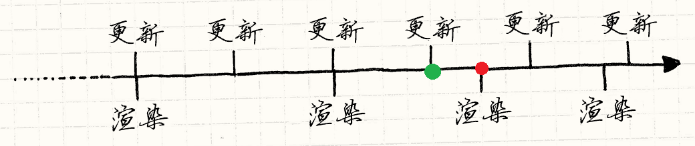

游戏引擎提供一系列可视化开发工具和可重用组件。这些工具通过与开发环境进行集成，方便开发者简单、快速进行数据驱动方式的游戏开发。为了提高游戏开发人员的开发效率，引擎开发者会开发出大量的游戏所需要的软件组件。大多数引擎集成了图形、声音、物理和人工智能等功能部件。游戏引擎会被称为“中间件”，因为它们可以提供灵活和重用平台，向游戏开发者提供所需要的全部核心功能，从而节省大量的游戏开发费用，降低开发的复杂性，缩短游戏的上市时间，所有这些对于高竞争性的游戏产业来说都是关键因素。诸如虚幻系列引擎、Unity3D、Frostbite Engine、zerodin引擎、Doom3引擎、CryENGINE、3DGame Studio、RenderWare、Gamebryo、Virtools以及Source引擎等引擎。
物理引擎是一个计算机程序模拟牛顿力学模型，使用质量、速度、摩擦力和空气阻力等变量。可以用来预测这种不同情况下的效果。它主要用在计算物理学和电子游戏以及计算机动画当中。物理引擎可作为游戏引擎的一个组件。
物理引擎有两种类型常见的型类：实时物理引擎和高精度物理引擎。高精度的物理引擎需要更多的处理能力来计算非常精确的物理，通常使用在科学研究（计算物理学）和计算机动画电影制作。实时物理引擎使用通常使用在电子游戏并且简化运算，降低精确度增以减少计算时间，得到在电子游戏当中可以接受的的处理速度。常用的物理引擎有：ODE、Box2D、PhysX、Bullet、Havok引擎。
游戏主循环
FPS(Frame Per Second)游戏帧速60帧是指游戏每秒循环更新60次。
一个游戏程序的基本结构像是这样:
1 | while (isRunning) |
固定拖时间更新法
1 | while (isRunning) |
累积时间更新法
1 | /* getCurrentTime()每次调用返回当前的时间 */ |
图形更新调用法
1 | while (isRunning) |
死循环并计算时间差用于更新法
1 | float lastUpdateTime = getCurrentTime(); |
累积时间半固定时长等图形更新并将时间差用于更新法
1 | //假设目标是60帧/秒更新的游戏 |
上述方法只针对单机游戏有效，如果是网络游戏，考虑客户端之间的同步问题的话，帧速不稳定地变来变去是不好的，我们可以记录过去的时间里跑过的帧数，如果达不到目标帧数就连续进行更新直到赶上需要的帧数。
1 | //假设目标是60帧/秒更新的游戏 |
游戏时间
计算机是通过高分辨率计时器来衡量现实时间的，而游戏时间显然不能和真实事件的时间线一致，每个游戏都会有自身的时间线，该时间线和真实时间是两个平行的世界。开发者可以暂停游戏，冻结时间线，也可以通过某种指令来加速时间线，这些对于游戏的调试非常有帮助。一些游戏也会有一些类似时光倒流或者时间变慢的特殊特效，而这些都是通过操作时间线来完成的。
现在假设游戏程序以 60 FPS 在运行，则每帧的处理时间大约为16毫秒。如果想要确保帧率稳定运行，每次循环的处理时间都应该小于这个值，剩余的时间，程序进入睡眠状态：
1 | while(true) |
如果每帧的处理时间小于16毫秒，sleep 可以保证游戏不会运行的太快。但是如果游戏的每帧超过16毫秒则会出现卡顿现象。
上面的代码中如果正常的情况下，可以确保每帧推进游戏进程16毫秒，但是因为每帧执行的时间无法固定，会导致帧处理时间超出固定的16毫秒而将游戏拖慢。在无法保证帧处理时间的情况下，我们尝试动态的更新策略，让每帧推进的时间不再是固定的16毫秒，而是根据帧处理的时间来动态调整：
1 | double lastTime = getCurrentTime(); |
每一帧我们都计算花费的真实时间（elapsed），而这条根据真实时间测量的时间线被称为全局时间线，所有的游戏内部 update() 逻辑都是基于这条全局时间线。update() 函数内部的处理逻辑会根据传入的时间间隔来驱动所有物体的动态效果，每个物体都有自己的局部时间线，这个局部时间线和全局时间线之间存在着一定的比例关系。例如游戏中存在一个飞行的子弹，子弹的飞行距离 = 子弹的飞行速度 * 子弹的飞行时间。这里的飞行时间并不一定是上面提到的全局时间线，可能是它的1/2或者2倍都是可以的，具体的快慢比例完全取决于你的游戏配置，这条和全局时间线比例不同的时间线也就是局部时间线。
游戏中渲染通常并不会被时间所影响，因为渲染引擎只是单纯的渲染某一时刻的数据逻辑，一般和时间没有关系。受影响的主要是游戏的逻辑更新部分，为了保证不会出现不同硬件的游戏效果不一致，我们可以固定游戏逻辑的更新时间间隔，确保更新频率保持一致。这样做虽然可能导致在配置好的机器上相同的逻辑被渲染多次，但是这显然并不会影响游戏逻辑。
1 | double previous = getCurrentTime(); |
现在游戏渲染时间线和游戏的更新时间线已经分离，代码中保持游戏的更新时间线以固定的时间间隔推进，这个时间间隔越短，update() 更新的频率越快，越慢更新的频率越低，过慢的更新频率会导致游戏产生抖动现象，不过因为时间步长和硬件不相关，这种现象只会出现在低端机器上。
通过上面的代码基本上已经可以解决游戏循环的大部分问题了，但是还会出现一种现象，就是当一次循环消耗过长的时间，在下一次游戏渲染的时候，渲染的数据仍然是上一个时间点的数据，而不是真实时间点的数据，这听起来不太容易理解，可以看下面的示意图：

在图中可以看出这是一个游戏的更新渲染序列，这里看第三次渲染（红点的位置）。因为上一帧的时间花费过长，导致在一帧的逻辑中调用了 update() 两次，进行了两次更新，这时渲染和更新的时间线发生偏移，渲染的真实位置在两次更新逻辑的中间，而渲染的结果却是上一次更新的结果（绿点的位置）。这显然是不对的，因为渲染的结果和现在真实的更新结果并不一样，这时候我们需要计算出二者时间线的偏移值，让渲染的结果符合真实的更新逻辑，也就是说需要计算出从绿点到红点位置的数据变化情况，只有这样渲染的结果才符合常理。
解决这个问题其实很简单，只需要将偏移的大小告诉渲染逻辑即可，渲染逻辑怎样处理这个偏移时间还需要程序自己来决定。
将渲染的代码改为：
1 | render(lag / MS_PER_UPDATE); |
参考链接
- 第十六章：物理引擎,by 冰点.
- 为什么单机游戏中的碰撞很不真实？物理引擎真的很难做到和现实一样吗？,by zhihu.
- 5.1、Faster Physics(一),by GIFPlane.
- 游戏主循环、帧速控制,by luvfight.
- 一些游戏程序的基础知识（一）,by luvfight.
- 一些游戏程序的基础知识（二）,by luvfight.
- FixedUpdate真的是固定的时间间隔执行吗？聊聊游戏定时器,by 嘉栋.
- 欧拉方法,by wikipedia.
- 游戏循环,by 没事造轮子.
- 大型多人在线游戏的开发中，如何做到每个玩家动作的实时同步的？,by zhihu.